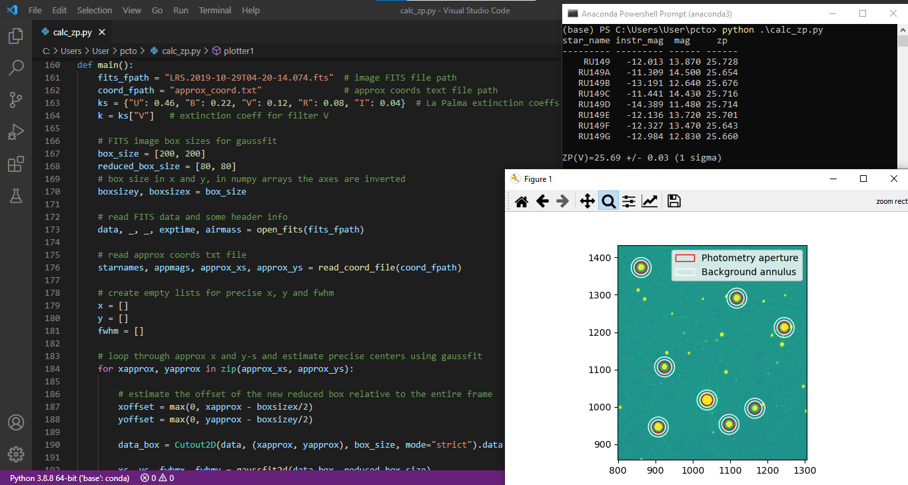

In the summer of 2021, I had my first research experience as an intern at the Galileo National Telescope on La Palma (Canary Islands), the biggest ground telescope of the Italian National Insitute for Astrophysics. My supervisors were Dr. Avet Harutyunyan and Dr. Gloria Andreuzzi. The aim of my research was the calculation of magnitudes and zero points of star cluster Rubin-149 using aperture photometry. In particular, I created a Python script to perform Gaussian fitting and magnitudes calibration and I used SAOImageDS9 software to study FITS files of the star cluster.
